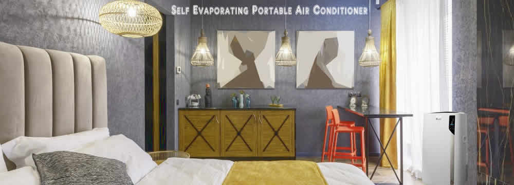
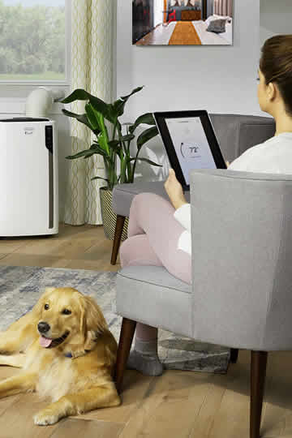

Self Evaporating Portable Air Conditioner
While most portable AC units need to be drained frequently, the fully self evaporating portable air conditioner units do not, thanks to a clever design modification.

By re-evaporating the condensate that forms inside the unit during the air cooling process and exhausting the now gaseous moisture to the outside, there is little left to fill the container that is there for that purpose.
This is well-worth the investment in a cooling appliance that eliminates its own internal condensate.
A self-evaporating portable AC conditioner can be used to reduce the amount of maintenance required for portable AC units.
It is worth it to pay for this cooling appliance.
An AC that self evaporates condensate rather than letting it drip into a bucket is an option if you are considering replacing your freestanding AC.
Let's first look at how these coolers function. This will give you an idea of how a portable AC works to keep you cool during hot weather.
How an Air Conditioner Works
Understanding how portable ACs work is crucial. Let's look at how an AC produces cool air in hot weather.
Inside the unit is a matrix of pipes filled with a refrigerant gas, a compressor, a condenser/evaporator and a fan.
The compressor compresses the gas, causing its temperature to drop significantly. This chilled gas is passed through the pipes over which the air flows and is similarly chilled.
The chilled air is pushed out of the unit into the room by the fan.
The mechanical components generate heat, which also must be removed from the unit, which is the function of the vent hose. Let's break it down:
Cooled Air
Air conditioners create chilled air by using a similar refrigeration process to your home refrigerator. It transfers heat from one coil of the coil to another, so one coil cools and the other heats.
The air is chilled by the coils, which cools it. The cold air is then blasted into a room to cool it. The heated coils produce hot air and lots of moisture. This moisture is removed from the chilled atmosphere.
Heated Air
The humid, hot air is expelled to the outside through pipes and ducts. But not all of it. Some moisture condenses on the cold coils just like steamy shower water condenses onto cold glass.
Condensed moisture from an air conditioner can form large drops that drip into a catchment zone near the bottom. It should be drained when it builds up.
The sensor might not empty the tray completely and cause the unit's to shut down until it is full. The auto will then shut down.
What is a Self-Evaporating Air Conditioner?
Let's take a look at what one of these self-evaporating AC units is and how it works.
The condensation that builds up inside portable units can be reused to improve the cooling efficiency of an air conditioner.
With special re-evaporating technology builtin, these units are able to recycle the moisture to help cool the heat-producing mechanical components to increase cooling efficiency. The moisture is then re-evaporated and exhausted out of the unit through the vent hose.
Evaporated water vapour absorbs heat more efficiently from the cooling coils. Instead of letting it condense, the exhaust ducts circulate the water vapour to the outside. This is what the new self-evaporating air conditioners do.
The excess moisture is evaporated and expelled to the outside.
Pros
One of the best things about these devices is that they don't require you to empty or drain your water tray.
Maybe you've already been through this tedious task and decided there must be a better way. Well there is!
This can be dangerous and frustrating. Portable units might need to be lifted onto a table or box to allow the water to drain into a bucket. The only way to move water from a tray to a bucket is by using gravity.
AC units can also shut down when there is too many water in the tank. This means that you won't have cooling. This happens when it is hot and uncomfortable.
Self-evaporating AC units, however, are not recommended.
Another advantage of vaporizing air conditioners is often overlooked. They are more efficient than traditional air conditioners. They require less energy to cool the air.
This could lead to a decrease in household energy consumption and visible savings when you pay your electricity bill.
Cons
These improved air cooling systems do have some disadvantages, albeit few when compared to regular portable AC appliances.
The main downside is that they are more expensive than their non-evaporating counterparts. These units have a small extra cost, which can be considered a disadvantage.
However, that disadvantage is quickly compensated by lower running costs and increased efficiency.
For some, the dual-hose configuration may appear a disadvantage over single-hose regular AC units, mainly because two hoses look uglier than one! However, this is relatively easily overcome by purchasing a hose covering that doubles as an insulator, further increasing efficiancy.
High Humidity
It could pose a problem if the unit is located in high humidity areas. If there is too much moisture, the unit may not be able to evaporate water.
In rare cases, a water tray can be used for retaining excess condensate. It will need to be empty when it is full, just like any portable air conditioner.
To prevent this, it would be a good idea to set the humidity in the room at a lower level. This can be avoided in bathrooms and kitchens that are not ventilated.
To reduce humidity, ventilating fans can also be installed in humid areas. Before the air conditioner can deal with the moisture, the fan will blow moist air through the vent.
Conclusion
In situations where you may not be able to install a window AC, a portable air conditioner can be a very workable cooling solution.
This type of movable cooling appliance is perfect for ease of installation and one that you can take with you if you rent and are considering moving periodically.
For great efficiency and economics, a self-evaporating portable conditioning unit that is fitted with a dual hose configuration is a good investment.
It's a great solution if you want to avoid the extra work and hassle of draining or emptying a water tank, especially in today's hectic way of life. The fewer maintenance jobs, the better!
In conclusion, owning a portable self evaporating air conditioner can save you time, effort and hassle while providing you with an efficient, powerful and relocatable way to stay cool in summer.
Resources:
https://s3-us-west-1.amazonaws.com/self-evaporating-portable-air-conditioner
https://sites.google.com/view/coolairconditioners/self-evaporating-ac
(Top of Page)
- Copyright © wired-owl.cloudvent.net/ All rights reserved
- Privacy
- Site Map